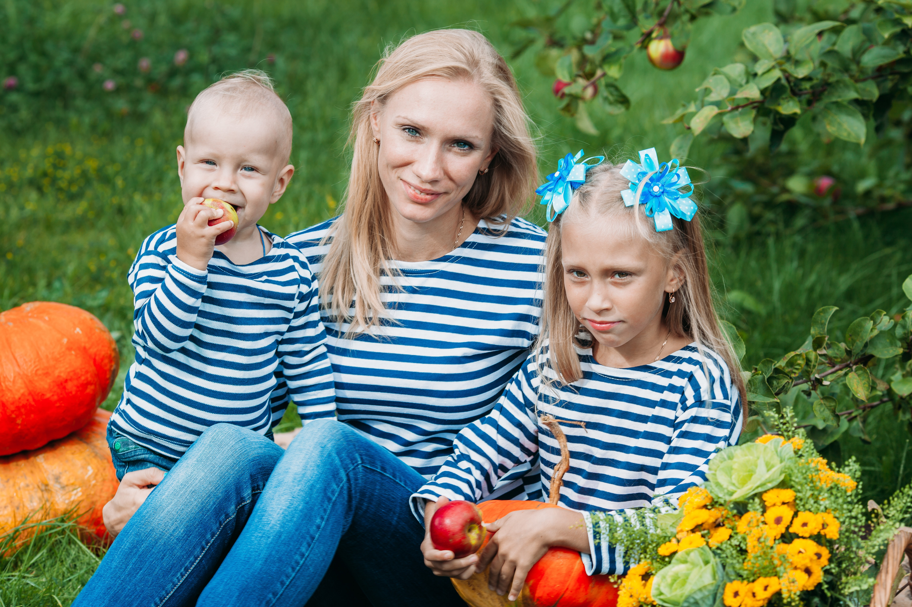

百香果團隊介紹
透過B2C模式，我可以建立自己的品牌。直接與消費者互動有助於提高產品的知名度和品牌價值。可以通過行銷策略、網絡宣傳等方式直接推廣自己的品牌，吸引更多消費者。
透過B2C模式，農夫可以直接將農產品銷售給消費者，從而確保食物的品質和新鮮度。這對營養師來說很重要，因為新鮮、高品質的農作物能夠提供更多營養價值，符合健康飲食的需求。

新鮮度是購買農產品時最重要的考慮因素之一。B2C模式通常意味著直接從農夫處購買，這意味著農產品的新鮮度可能會比從其他渠道購買的產品更高。
B2C模式通常意味著農產品直接從農夫處銷售給消費者，縮短了產品的供應鏈。這樣一來，不需要經過多個中間商或長途運輸，減少了運輸距離和相應的碳排放量，有助於降低環境負擔。

B2C模式削減了中間商在農產品供應鏈中的角色。農夫可以直接與最終消費者進行交易，從而消除了部分中間商的利潤和影響，直接受益的是生產者和消費者。
百香果生長過程
播種完之後，把花盆放在照散射光的位置，每天適量澆水，保持盆土溼潤。大概10天左右後會進入發芽期，百香果種子會長出幼芽。幼芽漸漸成長到幼苗這段時間爲生長期，待幼苗再長高一點，會有雜草跟幼苗爭搶養分，需要及時除草。還可以施1次肥，有利於植物開花結果。
在5月份左右，百香果的幼苗已經長大，莖藤也長的很長，上面長有茂密的葉子。這時需要用竹棍等工具插在百香果根部附近，供百香果的藤蔓纏繞生長。這個時候百香果已經進入開花期，再過20天左右，藤蔓上便會陸陸續續長出花朵。
百香果在開花期間，會有蜜蜂等昆蟲爲百香果花朵授粉，授粉後百香果便進入結果期。一般在5天左右會長出幼小的果子，果實爲綠色。
再生長一段時間，到7月份左右，果實便會進入成熟期，成熟後的果實從綠色變成紅色，散發着淡淡的香氣。